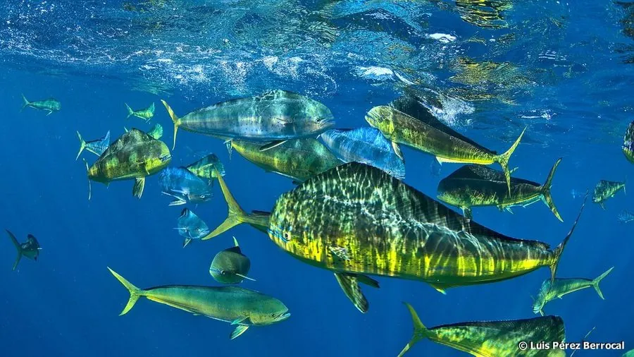

鱼类 · 动物界
鬼头刀 Coryphaena hippurus

热带大洋中色彩艳丽的大型鱼类，雄鱼头顶钝圆如铲、体色金蓝相间，游速快、生长快，是重要的游钓和食用鱼种。
- 分类
- 门脊索动物门纲硬骨鱼纲目鲈形目科鲯鳅科属鲯鳅属
- 栖息环境
- 全球热带和亚热带大洋的表层，常聚集在漂浮物和洋流锋面附近
- 地理分布
- 太平洋、大西洋和印度洋的热带、亚热带海域
- 保护级别
- 暂无评估；中国未列入国家重点保护野生动物名录
物种志
鬼头刀也就是鲯鳅，体呈长纺锤形、侧扁。雄鱼的头部钝圆、额部隆起如铲子，雌鱼的头部较尖，这是区分雌雄的明显特征。体色极为艳丽，背部蓝绿或金绿色，两侧金黄并散布蓝色斑点，离水后颜色会迅速变暗。成鱼体长一般 1–1.5 m，体重 10–20 kg，最大可超过 2 m、体重 40 kg 以上。
鬼头刀分布于全球热带和亚热带海洋，是大洋表层鱼类，常聚集在漂浮物和洋流锋面附近。它是肉食性鱼类，捕食小鱼、乌贼和甲壳类；游速快、生长也快，寿命较短，一般只有 3–4 年。繁殖期在温暖海域，雌鱼可以多次产卵。鬼头刀是重要的游钓鱼类和食用鱼，肉质细嫩，常见于热带地区的市场和餐桌，在夏威夷等地还是一道传统菜肴。由于种群分布广、繁殖力强，其资源状况总体尚可。目前它没有IUCN 的正式评估，中国未将其列入国家重点保护野生动物名录。
形态与习性
- 食性捕食小鱼、乌贼和甲壳类
- 体长一般 1–1.5 m，最大可超过 2 m
- 体重常见 10–20 kg，最大可超过 40 kg
- 寿命约 3–4 年
- 繁殖在温暖海域多次产卵，繁殖力较强
- 习性常聚集在漂浮物、洋流锋面附近，游速快
趣味知识
- 鬼头刀的雄鱼头部钝圆隆起如铲子，雌鱼则比较尖。
- 它的体色在活着时蓝绿金黄相间，离水后很快变得暗淡。
- 鬼头刀生长快、寿命短，是热带海洋中重要的游钓鱼种。